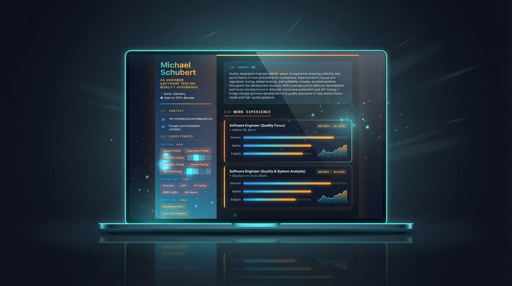
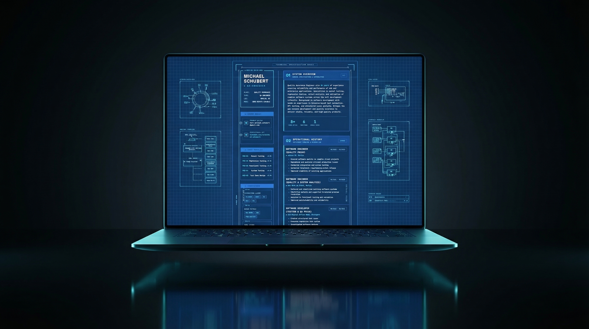

Diagnostic style interface presenting a CV as a system scan inspired by medical imaging.

Skill and experience visualization using heatmap inspired interface elements.

Technical blueprint inspired layout representing professional experience as system schematics.